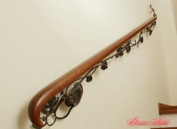
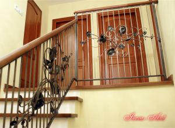
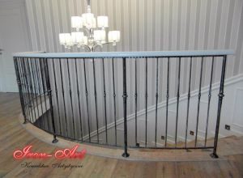
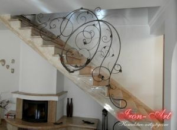

Internal forged iron railings
Our company dealing in artistic blacksmithing, offers customers products made with the highest precision and a sense of aesthetics.
Our assortment includes internal forged iron railings: balcony railings, patinated railings, artistically decorated stair railings, wooden and metal railings, Art Nouveau grates and decorative elements of stair railings and internal railings.
In our offer, in addition to internal forged railings, we also have external railings.
You can find out about the prices of our artistic products by contacting us or visiting our studio at 38 Brzezińska Street in Łódź. We encourage you to shop!













Decorating balustrades with silver, brass, copper plating and setting of semi-precious stones